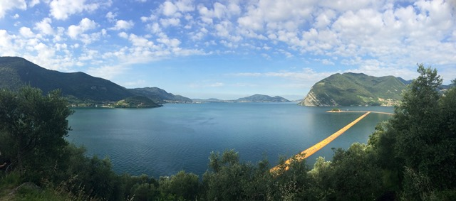

Sì, missione compiuta, siamo riusciti a camminare sui Christo's Floating Piers!
Sembrava facile, ma non lo fu.
Accedere ad un'opera tecnicamente monumentale come questa, che dura solo un paio di settimane e che tutti vorrebbero vedere, proprio non è semplice.
[Che sia un'opera "anche" artisticamente monumentale è assolutamente soggettivo ed è del tutto inutile ed ozioso discuterne, come per qualsiasi arte un po' fuori dai canoni.
Come discutere di filosofia: il tutto ed il contrario di tutto (provocatoriamente...)].
In ogni caso a Sulzano arriva un numero infinito di persone ---> per un numero finito, anzi finitissimo, di ore a disposizione.
Ecco le tre regole che ci eravamo imposti per goderci in maniera accettabile la camminata sul Lago d'Iseo:
1- partire i primissimi giorni dopo l'inaugurazione (più si va avanti più la situazione peggiora, come per l'Expo di Milano)
2- partire col PRIMO treno da Brescia, alle ore 05:55, arrivando in stazione con forte anticipo (già con questo treno, oggi 22 giugno, metà viaggiatori arrivati un po' dopo di noi sono rimasti a terra. Non so che ne è stato di loro, nè di quelli che avrebbero voluto prendere i treni di mezza mattina)
3- tornare presto (già a mezzogiorno ci sono ore di coda da Sulzano verso Brescia)
(Riguardo gli avvicinamenti in auto o in battello posso solo immaginare, ma non ho esperienza concreta).
Rispettate queste tre fondamentali regole (ma saranno ormai scadute?), per quanto ci riguarda è stata veramente una bella esperienza.
Lasciamo stare il "ponte" come si vede in fotografia, bisogna proprio camminare su quel bellissimo tappeto giallo oro a pelo d'acqua.
E' bello, è morbido, è piacevolmente mobile, ed aveva complice una mattina fresca e deliziosa, poco dopo il sorgere tardivo del sole dai monti ad est del lago.

Il Lago d'Iseo verso l'soletta di San Paolo con i floating piers
Ma l'opera andava diluita in un tempo almeno quadruplo, con beneficio di tutti.
Non si possono fare così madornali errori di valutazione (o peggio, di scelta) nell'affluenza, proprio non si può.
Ma tant'è...
Tu, Christo, questa volta sei stato bravo, hai fatto un'opera decisamente "popolare", con buona pace dei salotti intellettuali.
Mi sei piaciuto anche se ho DOVUTO fare tutto un po' di corsa.
Altrimenti sarei ancorà là, in fila per il treno di ritorno, con i pompieri che spengono con gli idranti i colpi di calore.
Buona fortuna!